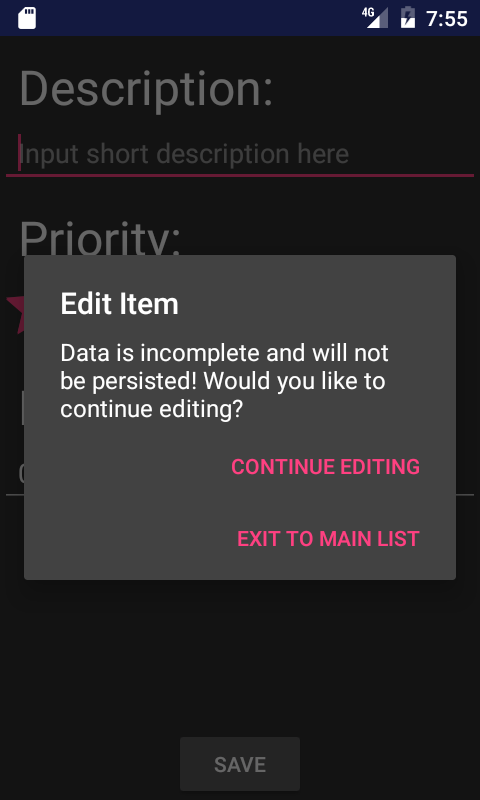
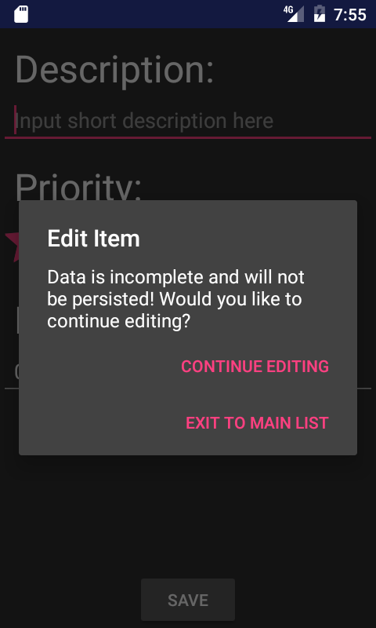

Tim McVicker
Mobile Software Development
CPSC 4820
Dr. Roy Pargas
Spring 2017
Mobile Software Development
CPSC 4820
Dr. Roy Pargas
Spring 2017
BudgetMinder is an Android application that will track and remember purchases and incomes that a user enters through the app. It will keep track of how much money a user has (their balance), and help to alert the user when he or she is spending over what they should. It will provide detailed statistics of expenses and suggestions for how to save more money. There will be multiple users and each user will be able to specify a location for their expense. The application will then display statistics based on the sum of all users’ expenses, and will use these statistics to suggest deviations to everyday expenses that will help the user.
Dr. Roy Pargas
Rob Percival and his tutorials
Codepath.com
Android studio developer guide
ToDoList was created by Tim McVicker for Assignment 3 in CPSC4820, Spring 2017.
This app is an extension of Assignment 2 below, except it adds an external database and authoring tool.
The app also incorporates a few minor fixes, mostly by using a DatePicker and dialog alerts.
The app makes use of a SQLite internal database as well as an external database through the use of an authoring tool. It also makes use of new widgets such as a rating bar and a switch and a DatePicker. Finally, it persists items as a user would expect while using the back button and cancel buttons.
All Acknowledgments are the same as Assignment 2 except with the addition of SimplifiedCoding.com to learn how to sync up databases.
ToDoList was created by Tim McVicker for Assignment 2 in CPSC4820, Spring 2017.
This app allows a single user to create a todo list, which is shown as a list on the main activity.
Each todo item has a short description, date due, and priority on a 1-5 scale.
The app allows the user to add items to the list, delete items from the list, and edit items. All
changes are persisted through an internal database. The app also provides error checking, ensuring
that when the user creates an item, the item contains all necessary requirements.
The app makes use of a SQLite internal database. It also makes use of new widgets such as a rating bar and a switch. Finally, it persists items as a user would expect while using the back button and cancel buttons.
I used Codepath.com to learn how to connect my local database with an ArrayAdapter. I also listened to Rob Percival's Android Tutorial to learn about basic widgets and images. I also used the Android Studio developer guides to learn about ListViews.
 


The app will calculate your BAC based on personal stats and a list on drinks that are input. It will also let you guess your BAC and tell you how far off you are. I found all of my images from google.com, one from the play store. I also want to credit StackOverflow for finding some solutions to coding problems. I also found the BAC formula from endmemo.com. The cool part of the app is that the final activity will change colors based on your calculated BAC. If it is under 0.08, it turns green. If it's under 0.25 it turns yellow, and anything higher that that it turns red.


{kind=link}